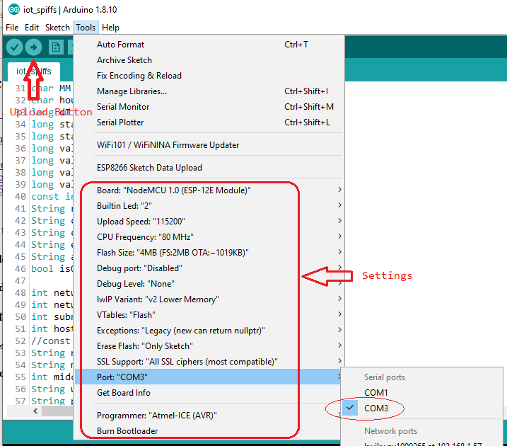
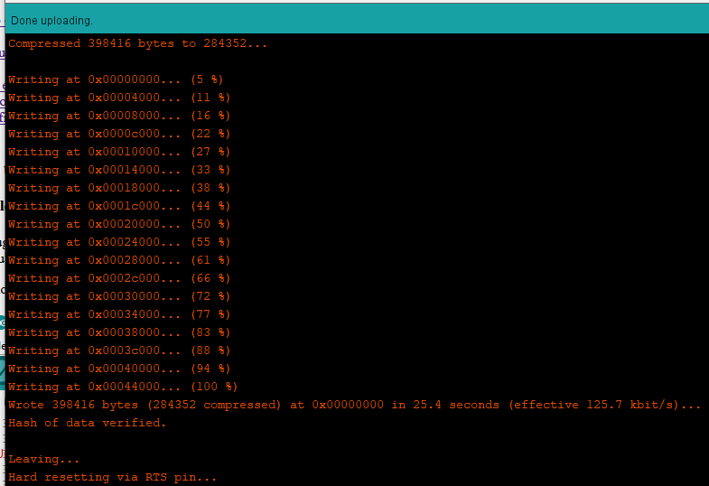
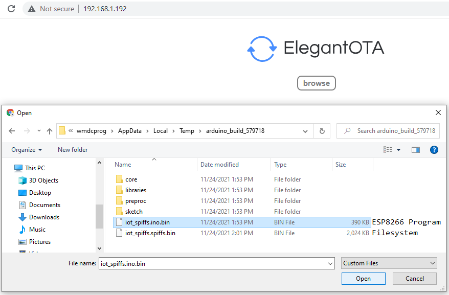
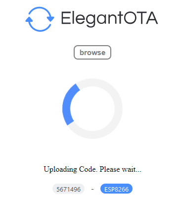
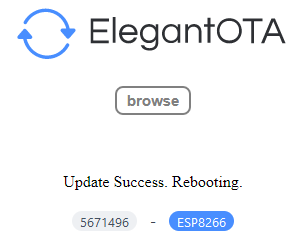

Plug USB from and to PC and ESP8266. A Serial
port will be available under Tools -> Port: if connected, in
my case, the Serial port named "COM3" in my PC. If you're
going to use other PC, the Serial port name might differ.
Check in device manager to verify the Serial port of ESP8266.
Then click the upload button.

If no errors in the program. Upload is successful.

Each mcd has its own IP assigned. Check machines.xlxs file. Enter
IP address of the MCD you want to upload code to in the browser.
Click `browse` and navigate to, in my computer,
`C:\Users\wmdcprog\AppData\Local\Temp\arduino_build_579718`.
Take note: `wmdcprog` is the username of the PC. It will be different when
you use other PC to upload. The `arduino_build_579718` folder is not permanent
in this directory. It frequently changes its folder name every time you compile
your program. But it only changes the number appended of the folder name. For example,
`arduino_build_579718` folder was generated at the time of writing this guide.
When you compile the program again or you compile the next day, it will change
to `arduino_build_anynumber`.
There are 2 .bin files generated when compiling:
`iot_spiffs.ino.bin` is a binary file we use to upload program to ESP8226.
It is the ESP8266 firmware itself.
`iot_spiffs.spiffs.bin` is a binary file we use to upload filesystem to ESP8226.
This contains the files inside the `data` folder.
Select `iot_spiffs.ino.bin` and begin web upload:

Web upload on progress

Web upload successful
